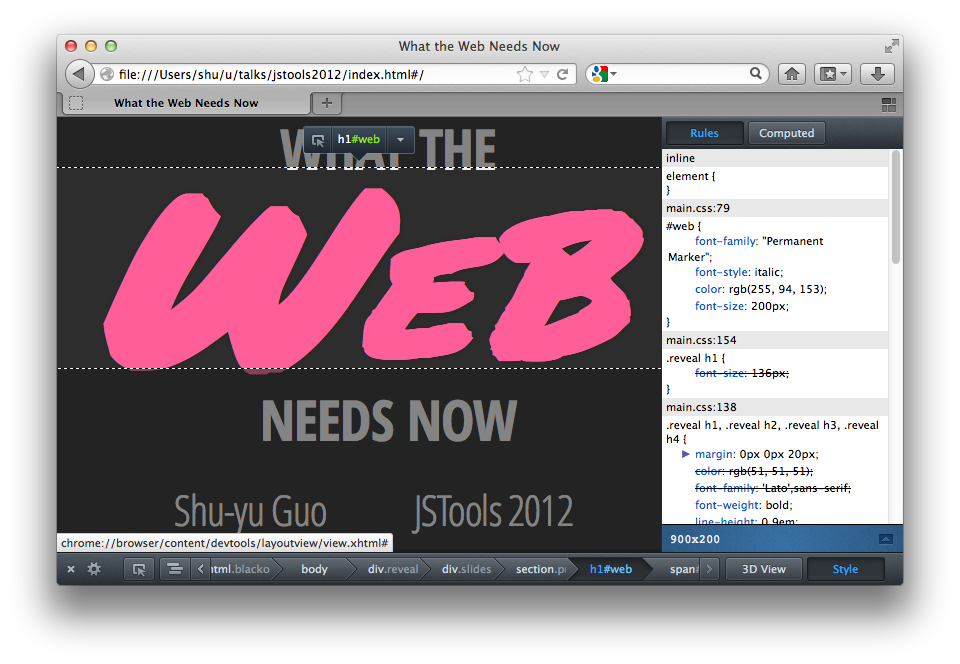
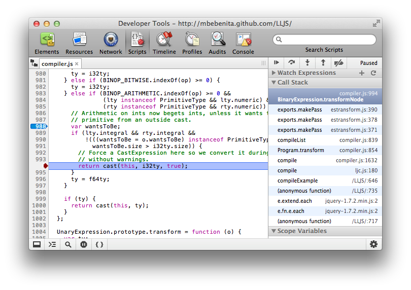
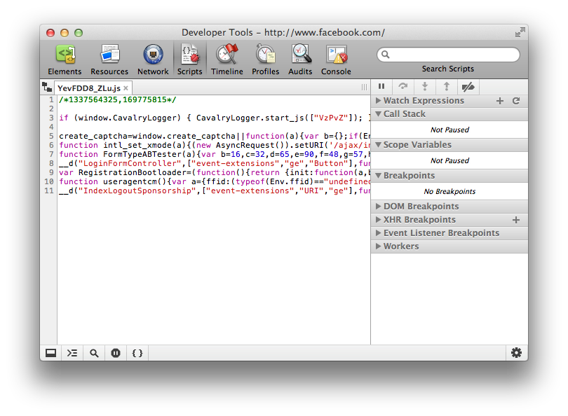
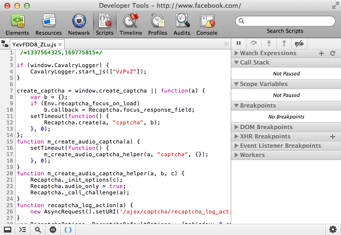
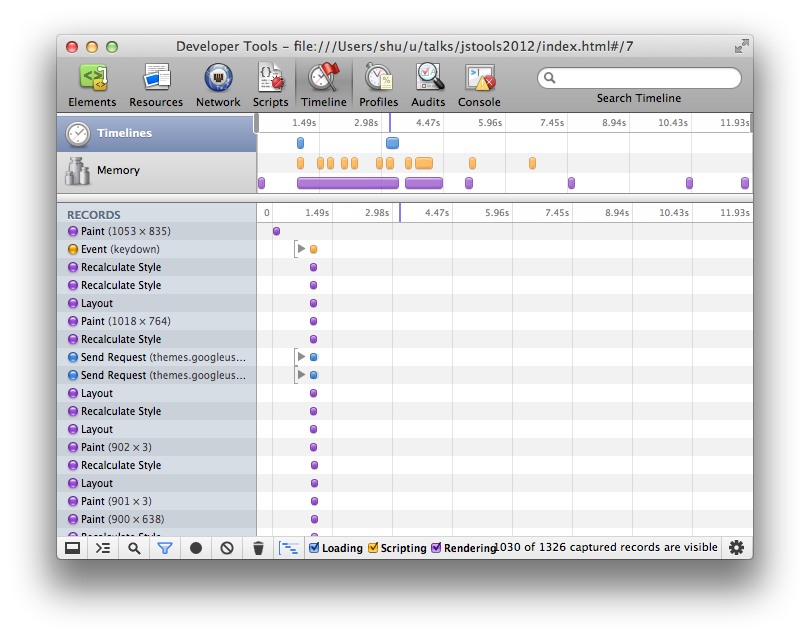
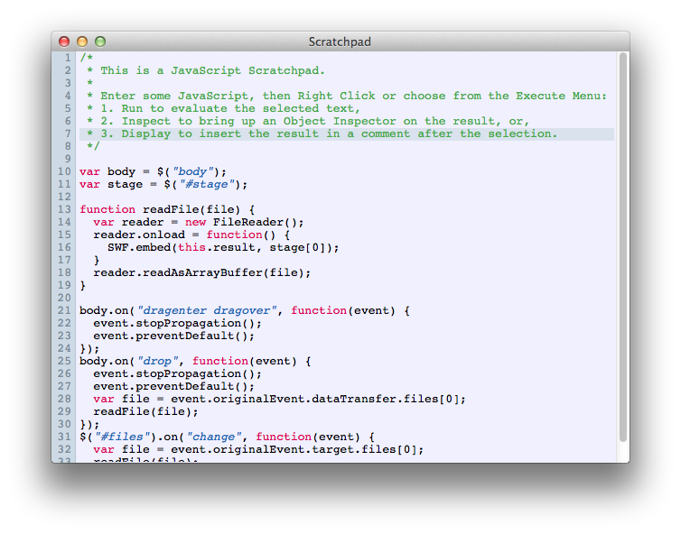
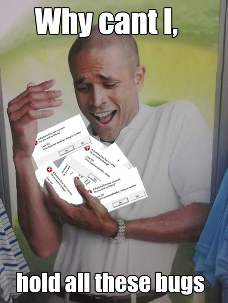
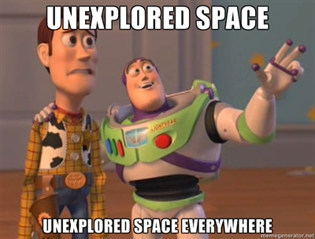

WeB
needs now
Shu-yu Guo
JSTools 2012
Doing good is part of our code.
mozilla.org
Inspectors
Step Debugger
Beautifier
 State of the Art
 That's nice. But don't we live in the future now?
Tools the Future Needs
- Integrated
- Transparent
- Visualized
Integrated
- ...into the browser
- Chrome can edit DOM in tree
- FF's Scratchpad
-
...into the JS programming experience.
- Flapjax
- FF's debugger API
Debugger API
Use the Browser, Luke
- Addons less scary than going into the guts
- FFI: ctypes
- Debugger API
Integrated
...into the web environment
The web is more than JS!
CSS is weird and hard-to-understand.
Integrated
...into the web environment, which is dynamic
eval... seems legit?
- JITs
- Partial evaluation
- Optimization. (Crazy, I know.)
eval is a legitimate tool in web developers' toolbox.
Static Analysis
Traditional static analyses have been a poor fit. Why?
- Precision and soundness
- Poor integration with runtime info
Transparent
JIT performance is unpredictable
...
#1:00039: 6 getgname "C"
typeset 1: object[1] <0x102110980>
type 0: object[1] <0x102110980>
#1:00044: 6 undefined
type 0: void
#1:00045: 6 new 0
typeset 2: object[1] [0x102100220]
type 0: object[1] [0x102100220]
#1:00048: 6 setgname "c"
type 0: object[1] [0x102100220]
#1:00053: 6 pop
#1:00054: 5 gnameinc "i"
#1:00060: 5 bindgname "i"
type 0: missing
#1:00065: 5 getgname "i"
typeset 3: int
type 0: int
barrier: void
#1:00070: 5 pos
type 0: int
#1:00071: 5 dup
...Programming Model
Dynamic + Higher-Order + Async
Programming Model
- Better way to debug asynchronous code?
- How do we even surface more info?
- Can analyses help?
Visualized
- Better feedback loop with developer
- Performance and profiling tools
- Augment analyses
- Compress wealth of information
- Bang for your buck
Visualizing Code Info
- Frequencies (performance, static)
- Runtime information
Visualizing Time
Code Mapping
numbers = [1,2,3,4,5,6]
evens = n for n in numbers when m % 2 is 0$ bin/coffee test.coffee
ReferenceError: m is not defined
at Object.<anonymous> (/Users/shu/cs/test.coffee:8:9)
at Object.<anonymous> (/Users/shu/cs/test.coffee:13:4)
at Module._compile (module.js:446:26)
at Object.run (/Users/shu/cs/lib/coffee-script.js:88:25)
at /Users/shu/cs/lib/command.js:183:29
at /Users/shu/cs/lib/command.js:152:18
...Not helpful!
Let's Dream Bigger

Corpora
Open & Queryable
...of JavaScript
- Crawlable
- Very, very valuable for all
...of profiled information
- GC
- Energy
Research Browser
- Can it be in JS?
- Also very valuable for all
Take Home
Thanks!
Brainstorming aided by Dave Herman and Michael Bebenita